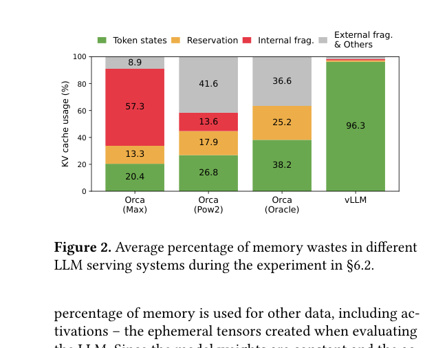
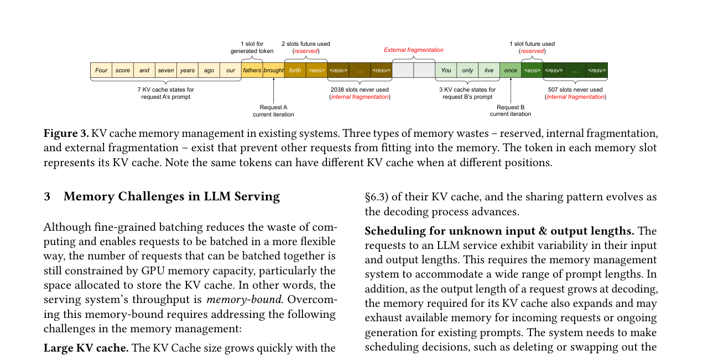
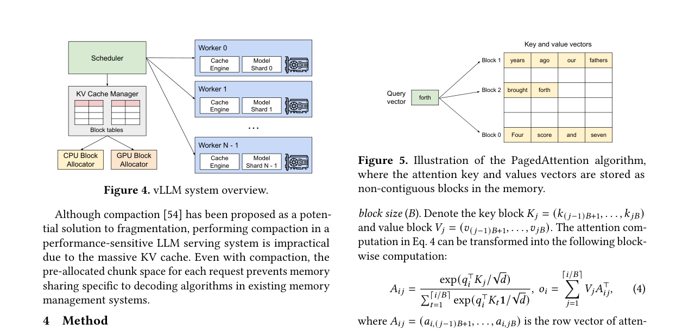
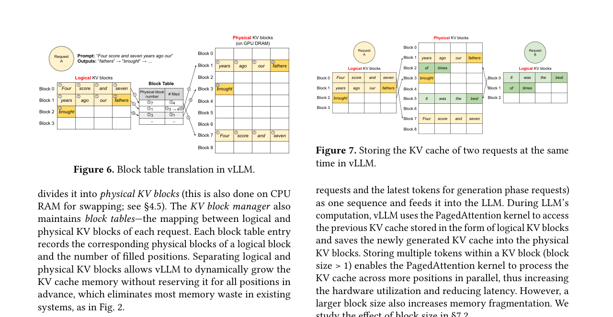

vLLM：基于 PagedAttention 的大语言模型高效内存管理：中文精读与校订
这篇论文做什么？
把操作系统的分页思想引入 KV cache 管理：逻辑块连续、物理块可离散，并在块粒度实现按需分配、共享和写时复制，从而扩大批量并提高服务吞吐。
- 问题：连续、预留式 KV cache 会产生内部碎片、外部碎片和冗余复制。
- 方法：PagedAttention + block table，把 token 的逻辑 KV 块映射到非连续物理块。
- 结果：在相近延迟下，主流模型吞吐提升 2–4×，长序列和复杂采样下收益更大。
校订说明：本页按原论文的论证顺序重写术语与因果关系；图均裁自论文原图，数据结论保留论文适用条件，不把峰值结果泛化为固定加速。
摘要。大语言模型（LLM）的高吞吐服务要求在同一时刻批量处理足够多的请求。然而现有系统在这一问题上遇到困难，因为每个请求的键值缓存（KV cache）体量巨大，且会随生成过程动态增长和缩减。当内存管理效率低下时，碎片化和冗余复制会显著浪费内存，从而限制批大小。为解决此问题，论文提出 PagedAttention——一种受操作系统经典虚拟内存与分页技术启发的注意力算法。在此之上构建了 vLLM 系统，实现了（1）KV cache 内存近乎零浪费，以及（2）请求内和跨请求的灵活 KV cache 共享。评估表明，vLLM 在相同延迟水平下将主流 LLM 的吞吐量提升 2-4 倍。序列越长、模型越大、解码算法越复杂，提升越显著。
1 引言
LLM 的自回归 Transformer 模型逐 token 生成输出，这一过程是内存带宽受限的，严重浪费 GPU 算力。提升吞吐量的方法是批处理多个请求，但批大小受限于 GPU 内存——尤其是分配给 KV cache 的空间。以 13B 参数的 OPT 模型为例，在 A100 40GB 上约 65% 内存用于模型权重，近 30% 用于 KV cache。KV cache 的管理方式直接决定了最大批大小，因而也决定了吞吐量。
现有系统将一个请求的 KV cache 存储在连续内存空间中，因为大多数深度学习框架要求张量连续存储。但 KV cache 有独特性质：它随生成动态增长和缩减，生命周期和长度事先未知。这导致两类严重问题。
1.1 内存碎片化
现有系统按请求的最大可能序列长度预分配连续内存块。这造成三种浪费：预留槽位（为未来 token 预留但当前空闲）、内部碎片（实际长度远小于最大长度时的过度分配）、外部碎片（不同请求预分配大小不同导致分配器碎片化）。实验显示，现有系统中仅 20.4%-38.2% 的 KV cache 内存实际用于存储 token 状态。
1.2 无法利用内存共享
LLM 服务常使用并行采样（parallel sampling）和束搜索（beam search）等高级解码算法，一个请求包含多条可部分共享 KV cache 的序列。但由于各序列的 KV cache 存储在分离的连续空间中，内存共享无法实现。
2 背景
2.1 Transformer 与自回归生成
语言建模将 token 序列的联合概率分解为条件概率的乘积。Transformer 的自注意力层对每个位置计算 query、key、value 向量，通过 query 与所有前序 key 的点积计算注意力分数，再加权聚合 value 向量。LLM 服务分为两个阶段：prompt 阶段（并行处理全部输入 prompt token，计算密集，GPU 利用率高）和自回归生成阶段（逐 token 生成，内存带宽受限，GPU 利用率低）。
2.2 细粒度批处理
传统请求级批处理要求等待整个批次完成才能加入新请求，排队延迟大。迭代级调度（iteration-level scheduling）在每个迭代后移除已完成请求、加入新请求，新请求只需等待一个迭代而非整个批次。配合特殊 GPU kernel 可消除 padding 需求。这一技术显著提升了吞吐量，但批大小仍受 GPU 内存容量约束。
3 PagedAttention
PagedAttention 受操作系统分页机制启发，将 KV cache 分割为固定大小的 KV block，每个 block 包含固定数量 token 的 key 和 value 向量。blocks 不需要存储在连续内存中——正如 OS 中逻辑页可以映射到非连续物理页。
在注意力计算中，PagedAttention kernel 分块识别和获取不同的 KV blocks。对每个 block，先用 query 向量与该 block 的 key 向量做点积计算注意力分数，再用分数与 value 向量加权求和得到输出。这种分块计算在数学上与传统注意力等价，但允许 KV cache 以非连续方式存储。
这一设计带来三个好处：用较小的 block 按需分配来缓解内部碎片；所有 block 大小相同从而消除外部碎片；以 block 粒度实现内存共享，可在同一请求的多条序列之间甚至不同请求之间共享。
4 KV Cache 管理器
vLLM 的内存管理类比 OS 虚拟内存。系统将 KV cache 组织为固定大小的 KV blocks（类比页），token 类比字节，请求类比进程。每个请求的 KV cache 表示为一系列逻辑 KV blocks，从左到右填充。GPU worker 上的 block engine 分配一段连续 GPU DRAM 并划分为物理 KV blocks。
系统维护 block table——逻辑 block 到物理 block 的映射表。每个条目记录对应逻辑 block 的物理 block 编号和已填充位置数。分离逻辑与物理 block 使 vLLM 能动态增长 KV cache 而无需预先预留所有位置，消除了现有系统的大部分内存浪费。
4.1 解码过程示例
以 prompt "Four score and seven years ago our"（7 个 token）为例：vLLM 初始只映射 2 个逻辑 block 到 2 个物理 block，无需为最大序列长度预留内存。prefill 后将前 4 个 token 的 KV cache 存入逻辑 block 0，后 3 个存入 block 1。第一个解码步生成新 token，存入 block 1 剩余槽位。第二个解码步 block 1 已满，vLLM 分配新物理 block 存入并更新 block table。
4.2 高级解码算法的内存共享
对于并行采样，多个输出共享同一 prompt 的 KV cache。vLLM 中这些序列的 block table 初始指向相同的物理 blocks。当各序列生成不同 token 时，新写入只发生在新分配的 block 中，共享的 prompt blocks 保持不变——这正是 copy-on-write 机制。对于束搜索，不同 beam 之间可以共享更大比例的 KV cache（实验中最多节省 55% 内存），共享模式随解码推进动态变化。
5 调度与抢占
当 GPU 内存不足以容纳所有活跃请求时，vLLM 需要做调度决策。系统采用抢占式调度（preemptive scheduling）：当内存耗尽时，可以换出（swap out）某些请求的 KV cache 到 CPU 内存，或直接丢弃（recompute）某些请求的 KV cache 以释放空间。换出策略将整个 block table 的物理 blocks 通过 PCIe 拷贝到 CPU RAM；当请求恢复时再换回。重计算策略则丢弃 KV cache，待请求恢复时重新执行 prefill。
换出在内存带宽充足时开销可控；重计算在 prefill 较短时也可接受。vLLM 默认使用重计算策略以避免 CPU-GPU 间数据传输瓶颈。
6 分布式执行
vLLM 采用集中式调度器协调多个分布式 GPU worker。调度器在每个迭代中选择候选序列、分配物理 blocks、构建 batch 并发送给 worker。每个 worker 运行一个模型分片（model shard），配备 cache engine 管理本地 KV cache。worker 之间通过全连接通信同步。系统支持张量并行（tensor parallelism）以部署超过单 GPU 内存容量的模型。
7 实验结果
评估覆盖 GPT、OPT、LLaMA 等模型，对比 FasterTransformer 和 Orca。主要发现：vLLM 在相同延迟下将吞吐量提升 2-4 倍。序列越长（如 2048 token），提升越明显，因为 KV cache 浪费在长序列中更严重。在并行采样和束搜索场景下，内存共享带来的收益尤为突出——beam search 最多节省 55% 内存。vLLM 的 KV cache 有效利用率从现有系统的 20%-38% 提升到 96.3%。
8 局限与选题启发
vLLM 的核心贡献是 KV cache 内存管理的分页化，解决的是单 GPU 内的内存效率问题。它没有深入跨 GPU 的 KV cache 放置策略、多层缓存层级，也没有考虑 LLM 工作流中多个请求之间的数据依赖和前缀共享的调度优化。这些方向正是 Parrot（应用级调度）、Helium（工作流感知缓存调度）和 EPIC（位置无关缓存）等后续工作的切入点。
对本仓库方向的意义。vLLM 是 LLM serving 内存管理的基石。PagedAttention 的分页思想将 KV cache 从连续存储的束缚中解放出来，为后续的缓存共享、前缀复用和跨层缓存管理奠定了基础。在 agentic workflow 调度的语境下，vLLM 提供了底层内存抽象，而工作流级调度（Astraea、SAIL、FATE）则在其之上做请求编排与状态复用决策。
公式与目标函数
PagedAttention 不改变注意力的数学语义；它改变的是 K、V 的物理寻址方式。内核按 block table 取回各物理块，再完成与连续 KV 完全等价的归一化和加权求和。
原论文图解




证据边界与校订结论
评估覆盖 OPT、LLaMA 等模型、不同长度和普通采样/并行采样/束搜索。关键因果链是：块级按需分配减少浪费 → 同一显存容纳更多序列 → continuous batching 的有效 batch 变大 → 吞吐提升。论文并未声称 PagedAttention 降低模型计算量；收益主要来自内存容量与批处理效率。
参考说明
参考文献保留在原 PDF 中。本文译稿覆盖摘要、内存挑战、PagedAttention 算法、KV cache 管理器、解码共享、调度抢占、分布式执行和实验结果。